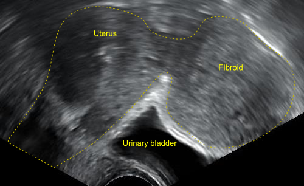

Ficha del catálogo
Mioma uterino
- Sistema
- Reproductor
- Modalidad
- US
- Región
- Pelvis femenina, útero
- Dificultad
- Básico
El mioma o leiomioma uterino es el tumor benigno más frecuente del aparato genital femenino y se origina en el músculo liso del miometrio. Su crecimiento depende de estrógenos, por lo que aumenta en la edad fértil y suele regresar tras la menopausia. Puede ser asintomático o causar sangrado abundante, dolor pélvico, síntomas compresivos e infertilidad.
Técnica
El ultrasonido transvaginal es la técnica inicial y permite localizar y medir las lesiones con precisión. La resonancia magnética se emplea cuando existen múltiples miomas, cuando se planifica cirugía o embolización, o cuando el útero es muy voluminoso. La histerosonografía resulta útil para valorar el componente submucoso y su relación con la cavidad.
Qué observar
- Nódulo miometrial bien delimitado con patrón de sombras acústicas en abanico
- Localización submucosa, intramural o subserosa y grado de protrusión a la cavidad
- Número, tamaño y volumen uterino total
- Vascularización periférica en anillo en el estudio Doppler
- Signos de degeneración quística, hialina o hemorrágica
- Compresión de estructuras vecinas como uréteres o vejiga
Hallazgos
En ultrasonido se identifican nódulos redondeados, habitualmente hipoecogénicos y heterogéneos, con sombra acústica lateral y atenuación posterior en bandas. El Doppler demuestra un patrón vascular periférico circunferencial. En resonancia son marcadamente hipointensos en T2 respecto al miometrio, con bordes netos, y las formas degeneradas muestran áreas de señal alta o mixta.
Perlas
La localización es más determinante que el tamaño para explicar los síntomas: Un mioma submucoso pequeño puede causar sangrado intenso e infertilidad, mientras que uno subseroso de gran tamaño puede resultar silente. Por eso el informe siempre debe precisar la relación con el endometrio y la serosa.
Diagnóstico diferencial
- Adenomiosis
- Muestra engrosamiento mal delimitado de la zona de unión, quistes miometriales y estriaciones lineales, sin nódulo con margen definido.
- Leiomiosarcoma
- Es raro; sugerido por crecimiento rápido, márgenes irregulares, necrosis extensa y restricción marcada de la difusión.
- Pólipo endometrial
- Es intracavitario, hiperecogénico, con vaso nutricio único y no distorsiona el contorno miometrial.
- Masa anexial sólida
- Se separa del útero al aplicar presión con el transductor y no presenta el signo del puente vascular con el miometrio.
Simuladores
- Contracción miometrial transitoria
- Adenomioma focal
- Mioma subseroso pediculado confundido con masa ovárica
Por modalidad
- TC
- Aporta poco para caracterizar, pero muestra el tamaño uterino, las calcificaciones y las repercusiones sobre uréteres y vejiga.
- US
- Es la técnica de elección inicial por su disponibilidad, resolución en el estudio transvaginal y capacidad de valorar vascularización.
Protocolo
Ultrasonido pélvico con abordaje transabdominal con vejiga llena seguido de estudio transvaginal con vejiga vacía y transductor de alta frecuencia. Se realizan cortes sagitales y transversales del útero con medición de los tres diámetros y de cada mioma relevante, complementados con Doppler color. En resonancia se emplean secuencias T2 en los tres planos con estudio dinámico si se plantea embolización.
Clasificación
La clasificación más difundida ordena los miomas del 0 al 8 según su relación con las capas uterinas: Los tipos 0, 1 y 2 son submucosos con grado creciente de componente intramural, los tipos 3 a 5 son intramurales y subserosos, los tipos 6 y 7 son subserosos con distinto grado de pediculación y el tipo 8 corresponde a localizaciones especiales como la cervical.
Errores frecuentes
- Confundir una contracción miometrial transitoria con un mioma por no repetir la exploración
- Atribuir a un mioma subseroso pediculado un origen ovárico y errar la planificación quirúrgica
- No describir la relación del mioma submucoso con la cavidad endometrial cuando hay infertilidad

mioma leiomioma útero sangrado uterino sombra acústica submucoso ultrasonido transvaginal